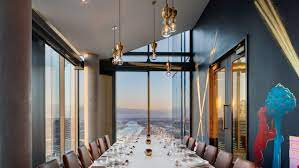
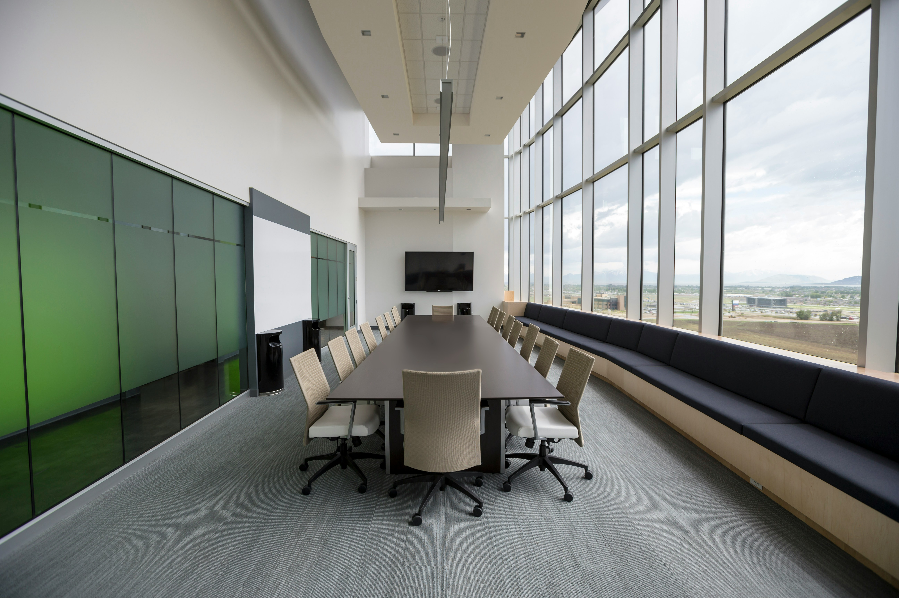

Private Dinning And Special Events
CHIEF'S TABLE
In summary, a chef is a skilled professional who combines culinary expertise, creativity, and leadership to create extraordinary dining experiences. They are responsible for menu planning, recipe development, ingredient sourcing, food preparation, kitchen management, and team leadership
OENOS ROOM
Adjacent to the Kouzina is the Oenos or “wine” room. This is one of Kokkari’s two private dining rooms. This room features large windows that look out on to Jackson Street and a dramatic wall of wine racks that spans floor to ceiling. The large, wood-framed, sliding glass doors that separate the Oenos Room from the main dining area allow guests to feel part of the restaurant while still being in a private space. This room can accommodate 30 people.

HANIA
This unique private dining room is located downstairs and is completely separate from the main dining area. The room has the feel of a wine cellar with warm wood accents and rich, tapestry carpets. It features a rectangular polished wood table that accommodates up to 10 people comfortably. The Hania Room is ideal for small business meetings and intimate family functions.